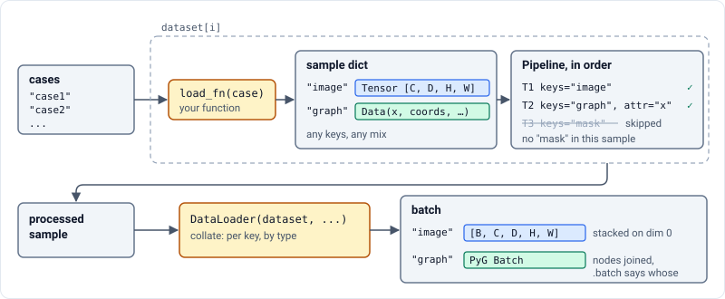
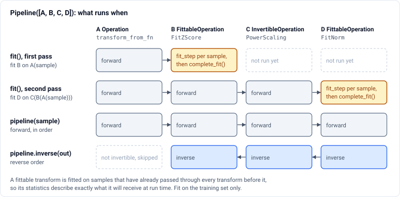

im2sim.data#
Classes#
Template for building im2sim datasets. |
|
Subclass of InvertibleOperation that additionally enforces implementation of fit_step and complete_fit for fitting attrs to full dataset |
|
Subclass of Operation that additionally enforces implementation of an inverse method |
|
Abstract base class for making operations. |
|
A wrapper for operations that allows the selective application of the operation by dict key, object attribute and channel |
Functions#
Create a DataLoader for an im2sim dataset. |
|
Collates a batch of data in the form of dict{str: torch.Tensor/PyG.Data} Tensors are batched by stacking in the 0 dim and PyG Data are batched by PyG (https://pytorch-geometric.readthedocs.io/en/2.5.2/advanced/batching.html) |
|
Guide#
data loads cases, preprocesses them and batches them for training. A sample is a plain
dict whose values are tensors or torch_geometric.data.Data graphs, so one sample can hold
an image, a mask, a template mesh and a target graph side by side.
The pieces are:
Dataset: turns a case identifier into a sample with yourload_fn;Operationand its subclasses: the numerical step, such as “z-score this tensor”;Transform: applies an operation to chosen keys, attributes and channels of a sample;Pipeline: an ordered list of transforms that can be fitted, inverted and saved;DataLoader(): PyTorch’sDataLoaderwith a collate function that understands graphs.
The ready-made transforms (normalisation, scaling) are in im2sim.transforms.
From case to batch#

from im2sim.data import DataLoader, Dataset
def load(case):
return {
"image": torch.load(f"images/{case}.pt"), # Tensor [C, D, H, W]
"graph": torch.load(f"templates/{case}.pt"), # torch_geometric Data
}
dataset = Dataset(load_fn=load, cases=["case1", "case2", "case3"], transforms=pipeline)
loader = DataLoader(dataset, batch_size=4, shuffle=True, num_workers=4)
for batch in loader:
batch["image"] # Tensor [4, C, D, H, W]
batch["graph"] # torch_geometric Batch, with batch["graph"].batch
Keep the dataset responsible for finding and reading files, and put all preprocessing in
transforms. The same load_fn can then serve training, validation and inference with different
pipelines.
load_fn must return only tensors and Data objects. The collate function stacks tensors
along a new first dimension, so they must have the same shape across a batch. It joins graphs
into a single PyG Batch. Any other value type raises a TypeError.
Operations#
An operation is the numerical step, independent of where it is applied. There are three levels:
Base class |
Implement |
Adds |
|---|---|---|
|
|
— |
|
|
can be undone with |
|
|
learns parameters from a dataset |
import torch
from im2sim.data import InvertibleOperation, Transform, register_op
@register_op
class LogOp(InvertibleOperation):
def __init__(self, eps=1e-6):
self.eps = eps
def forward(self, x):
return torch.log(x + self.eps)
def inverse(self, x):
return torch.exp(x) - self.eps
log_pressure = Transform(op=LogOp(), keys="graph", attr="pressure")
@register_op makes the class known to load_pipeline.
Without it, a saved pipeline that contains the operation cannot be loaded again. Simple
attributes (numbers, strings, booleans, tensors) are saved as the operation’s state
automatically.
Transforms#
A Transform decides where an operation is applied:
keysWhich entries of the sample to change. With several keys, the same operation (and the same fitted statistics) is applied to each key in turn. Set
multikey=Trueto pass all of them to the operation in a single call instead, for example for a spatial operation that must change an image and its mask together.attrFor a graph, which attribute to change, such as
"x"or"coords". Leave it asNoneto pass the whole value.channels,per_channel,channel_dimWhich channels to change, and whether each channel gets its own copy of the operation. See im2sim.transforms for diagrams.
channel_dimdefaults to-1, which suits graph features[N, C]. For channel-first images, count from the end, for example-4for[C, D, H, W]. The same index then also works on the[1, C, D, H, W]batches used while fitting.
A transform never changes its input: it works on a deep copy of the sample.
Pipelines#
A Pipeline runs its transforms in order. A transform whose keys are not all present in a
sample is skipped for that sample, so one pipeline can serve samples with different contents, for
example training samples with targets and inference samples without.
Fitting#
pipeline.fit(dataset) fits every transform built on a FittableOperation, one at a time.
Each one sees the training samples after all the transforms before it have been applied, so its
statistics describe exactly the data it will receive.

from im2sim.data import Dataset, Pipeline
from im2sim.transforms import FitZScore, PowerScaling
pipeline = Pipeline([
PowerScaling(exp=0.5, preserve_sign=True, keys=["graph"], attr="x"),
FitZScore(keys=["graph"], attr="x", channels=[0, 1, 2], per_channel=True),
])
train_dataset = Dataset(load_fn=load, cases=train_cases, transforms=pipeline)
val_dataset = Dataset(load_fn=load, cases=val_cases, transforms=pipeline)
pipeline.fit(train_dataset) # replaces the dataset's own transforms while fitting
Fit on the training cases only, then reuse the same fitted pipeline for validation, testing and
inference. Fitting on validation or test cases leaks their statistics into preprocessing. A
fittable transform raises a RuntimeError if it is used before it has been fitted.
Fitting reads every case once with batch_size=1, for each fittable transform. Stochastic
augmentation is better kept in a separate, training-only pipeline that is not fitted.
Inverting#
pipeline.inverse(sample) undoes the invertible transforms in reverse order and skips the
others. Use it to bring model outputs back to physical units:
prediction = {"graph": model_output_graph}
prediction = pipeline.inverse(prediction) # graph.x back in the original units
Saving and loading#
A pipeline is saved as its configuration (each transform’s operation class, arguments, keys and channels) together with its fitted state:
from im2sim.data.core import load_pipeline, save_pipeline
save_pipeline(pipeline, "pipeline.pt")
pipeline = load_pipeline("pipeline.pt")
Store the fitted pipeline with the model checkpoint, because a model trained on normalised data
is only usable with the statistics it was trained with. Two limits apply. Operations must be
registered with @register_op, which rules out transforms made with transform_from_fn.
And the multikey setting is not restored on load.